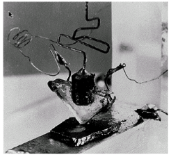
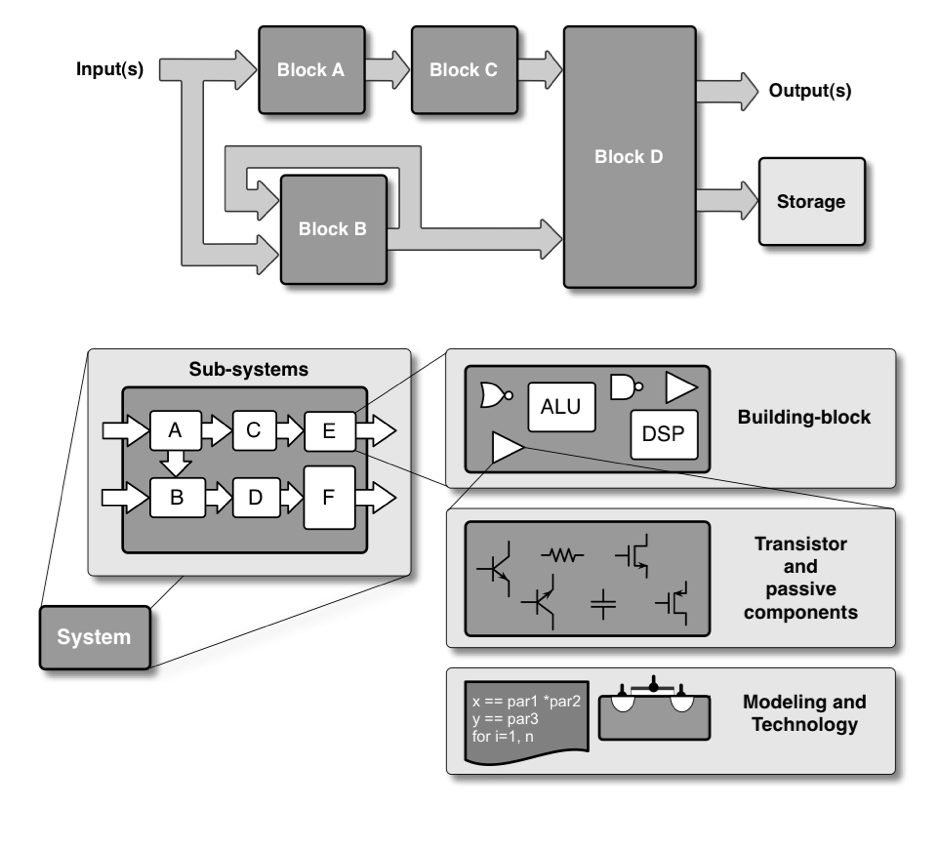

1 Einleitung
1.1 Wissenschaftliches Rechnen / Datenwissenschaft
1.2 Schaltungssimulation (SPICE)
1.3 Betriebssystem (OS) - Werkzeuge (Tools)
1.4 Code Editoren
- Visual Studio Code
- Notepad++ (Windows)
- Emacs
- Vim
1.5 Datenverarbeitung / Data Sciences
1.5.1 Dateisystem / Journaled File System
- Ordner / Directories
- Dateien / Files
1.5.2 Tabellenformate / Rectangular Data
- Comma-Separated-Values (CSV), Tab-Separated-Values (TSV)
- wireservice/csvkit: A suite of utilities for converting to and working with CSV, the king of tabular file formats.
- johnkerl/miller: Miller is like awk, sed, cut, join, and sort for name-indexed data such as CSV, TSV, and tabular JSON
- Spreadsheet (.xlsx, .ods)
- apache/iceberg: Apache Iceberg
- apache/iceberg-python: Apache PyIceberg
1.5.3 Serialisation
1.5.4 Spezielle Formate / Data Frames
- Mastering Python Dictionaries: Efficient Data Storage and Retrieval - Adventures in Machine Learning
- MAT-File Versions - MATLAB & Simulink - MathWorks Deutschland
- HDF5 Or How I Learned To Love Data Compression And Partial I/O
- Was ist Apache Parquet?
- Feather File Format
- pola-rs/polars: Dataframes powered by a multithreaded, vectorized query engine
- ibis-project/ibis: Portable Python dataframe library
1.5.5 Embedded DB-Engines
1.6 Schreibst Du noch oder TeXst Du schon?
1.7 LaTeX Editoren
- IDE’s
- Kollaborative Frameworks
1.8 Literaturverwaltung und LaTeX
1.9 Schöne neue Welt

1.10 Halbleiterherstellung (Infineon, Dresden)
1.11 FinFET (Intel)
1.12 TSMC Fab (Next Gen 7/5 nm)
1.13 Es war einmal …


1.14 Damals und heute


1.15 Systemhierarchie

Nutzen Sie Hierarchien zur Beschreibung komplexer Systeme
Teile und herrsche
1.16 Schnittstellen zur Aussenwelt

1.17 Meeting mit einem System

1.18 System in a Package (SiP)

1.19 Sie werden unsere Experten
Hintergrundwissen
- Systemverständnis, Architektur, Herstellungsverfahren, Implementation
Unterbewusste Kompetenz
- Abgespeicherte Erfahrungen aus Erfolgsgeschichten und Misserfolgen
Spezialwissen
- Berufsspezifisches Wissen
Teamwork Haltung
- Kommunikationsfähigkeit, Berichtswesen und technische Präsentation
Kreativität
Tool-Kenntnisse
1.20 Lernziele des Moduls
Elektrische Systeme mathematisch und graphisch im Zeit- und Frequenzbereich beschreiben
Netzwerkanalyse mit RLC-Gliedern
Spezielle Netzwerke, wie Messbrücken, Schwingkreise und ideale Transformatoren, dimensionieren.
1.21 Seminaristischer Unterricht
Komplexe Wechselstromrechnung
Diskrete Bauelemente und ihre Modellierung (RLC)
Methodik der Netzwerkanalyse
Anwendungsbeispiele mit EDA-Werkzeugen und wissenschaftliches Rechnen (Scientific Computing)
1.22 Beschreibung elektrotechnischer Systeme
verschiedene Stufen der Vereinfachung
Felder / Wellen / Optik / HF-Technik
- Maxwell-Gleichungen \[ \begin{align} \oint \mathbf{H} d\mathbf{s} &= \iint \mathbf{J} + \dot{D} d\mathbf{A} \\ \oint \mathbf{E} d\mathbf{s} &= - \iint \dot{B} d\mathbf{A} \end{align} \]
bei lokaler Konzentration der Feldenergie \(\Rightarrow\) quasi-statische Näherung
Mikrowellentechnik / Leitungstechnik
- verteilte Schaltungen \(l\), \(c\), \(\rho\)
- Kopplung, Laufzeit \(\tau = a/v\)
kleine Systeme mit \(a << \lambda\) bzw. kurze Laufzeiten mit \(\tau << T\)
Regelungstechnik / Impulstechnik
- Ersatzschaltungen
- (Block-)Schaltbilder
eingeschwungener Zustand
NF-Technik
- stationär-periodische Signale
Sinussignale
Energietechnik
- monofrequente Signale \(U = Z \cdot I\)
Frequenz \(f \rightarrow 0\)
Gleichstromtechnik
- Ohmsches Gesetz \(U = R \cdot I\)
1.23 Konzentrierte Schaltelemente
\[ \begin{equation} \frac{\int E(r,t) ds}{\iint J(r,t) dA} = \frac{u(t)}{i(t)} \Rightarrow R \end{equation} \]
\[ \begin{equation} \frac{\iint D(r,t) dA}{\int E(r,t) ds} = \frac{q(t)}{u(t)} \Rightarrow C \end{equation} \]
\[ \begin{equation} \frac{\iint B(r,t) dA}{\oint H(r,t) ds} = \frac{u(t)}{i(t)} \Rightarrow L \end{equation} \]
1.24 Harmonische Signale …
\[ \begin{equation} u(t) = \hat{U} \cos(\omega t + \phi) \end{equation} \]
\[ \begin{equation} U = \lvert \hat{U} \lvert e^{j \phi} \end{equation} \]